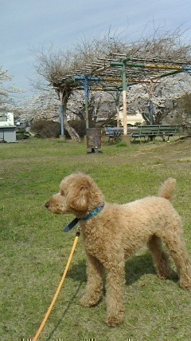

2014/0415Tue（´-`）.｡oO(かずみ ん×278
皆さんばけらった(*´ｰ`*人)
いつも応援ありがとぅ〜
いい天気の日って
本当気持ちがいい！
一人で外をぼーっと眺めるのが
好きです。
昨日の握手会も
ありがとうございました！
沢山の人！みんないい人！
ありがたいね〜
めっちゃ元気もらえました♡
松井玲奈さんもお披露目！
兼任は大変だと思いますが
一緒に頑張りましょう^ ^
玲奈さんファンのみなさんも
乃木坂をよろしくお願いします！
そして幕張の全握なので、やっぱり
父も来ました...ヽ(；▽；)ノ
父の前でちょうど止まって
休憩に入ったので
父が先頭で待ってたよ。笑

うちの犬、チョコは足が
相変わらず長い。
最近のこと話すよー♡
何年ぶりかに
映画を観ました！
レディースDAYです(｀･ω･´)b
チーム・バチスタFINAL
ケルベロスの肖像
を観ました！
私は4年前の最初から
このバチスタシリーズが
大好きでしてっ...
今回でシリーズが
終わっちゃうのは寂しいです(´;ω;`)
伊藤淳史さん演じるぐっちーの
人柄が本当に素晴らしくて、
人間として尊敬しておりました！
もちろん白鳥さんとの
コンビが絶妙でまたいいんですよ！
うう...
語り足りない((((/*0*)/
今までありがとう！
さらばバチスタ！
ちょっと懐かしの写真！
ロマンスのスタートの
MVのオフショット、
マムシのやつです〜
衣装は実はものすごく
可愛かったです(∩*´ω` *∩)ぴよぴよ
明日は氣志團フェスじゃー！
久々に氣志團さんに会えるし
みんなのあれも楽しみですっ♡
頑張るぞー！！
毎日悔いのない日々に
なりますように...
それではっ
ポジピース-♡(*´ｰ`* )→
2014/04/15 00:30


コメント(506)
ロマスタ俺のヘビロテ曲だよ！
えりにゃんだよー⊂( ˆωˆ )⊃
日曜はお話できて嬉しかったよ♡
次の日曜もお話できるの楽しみにしてるね！
かずみん昨日はありがとう！！
来週もよろしくね〜！！
疲れてる時の握手は格別でしたね←
お疲れ様(・∀・)
来週の乃木どこ？楽しみだな。
かずみん頑張るしかー！
覚えてるかなw
また今度、握手いくね！
おつかれさまー！(((o(*ﾟ▽ﾟ*)o)))
大学生活なれないけどたのしい！(((o(*ﾟ▽ﾟ*)o)))
昨日初めてかずみんと握手したんだけど...
かずみん可愛すぎ♡
俺はかずみんの鼻好きだよ！！
またいくね(^^)
一緒にアメイジング出来たのが
何よりも嬉しかったです
氣志團フェス頑張ってください(￣^￣)ゞ
日曜日の握手楽しかったよありがとう！！
しばらく行ってなかったのに入った瞬間笑われた(⌒▽⌒)なんで(⌒▽⌒)ぼくの顔になんか付いてた？(⌒▽⌒)←
はい、浮気しません。一実さんだけ推していきますヾ(＠⌒ー⌒＠)ノ←
20日の握手楽しみヾ(＠⌒ー⌒＠)ノ話したいこといっぱいあるんだヾ(＠⌒ー⌒＠)ノ
てことで今回はこのへんでヾ(＠⌒ー⌒＠)ノ
そして、チョコ推しです♪
可愛い(*^_^*)
マムシの衣装も可愛かった＼(^o^)／
来週も会いにいきます！！！
明日の氣志團LIVE、かずみん似顔絵Tシャツ着て応援しに行きますのでがんばってください（≧∇≦）
昨日は一日お疲れ様でした(*´ω｀*)
かずみんには1回しか行けなかったけども
次こそは、もっと時間を掛けて
お話できればと思いました。。。
れなひょんとのパフォーマンス
素晴らしかったと、思う！
みんな素晴らしい「乃木坂さん」なので
れなひょんが更に溶け込めるよう
かずみんのパワーが役に立つと、いいね！
氣志團フェス、是非とも頑張ってね！
現地に行けないけど
その分、最高のパフォーマンスができるのを期待してる！
かずみんなら、大丈夫よヾ(*´∀｀*)ﾉ
チョコも元気そうで(・∀・)ｲｲ!!
でわでわ～アメイジング＼(^o^)／
握手会お疲れさん！
お父さんと握手するってどんな感じなの？笑
かずみんのお父さんと連番してみたいなー。笑
んっ！？！？！？
最後の２枚！！！
髪切ったの？？？
それとも擬似ボブ？？？
(￣- ￣ ) ﾝｰ
どっちにしろかわいい(*´･ω･｡)σ
こりゃやばいぞ(*´･ω･｡)σ
明日の氣志團ﾌｪｽ頑張ってね！
それではっ ポジピース-♡(*´ｰ`* )→
また握手行くからよろしくねー( ☆∀☆)顔覚えてて欲しいなー。(笑)(笑)
さすが千葉でやるだけあるね♪
握手会もミニライブもお疲れ様でした！！！
頑張って！応援してます！^_^
名古屋のプラチナ期、えりりん推しのもんころりです。
玲奈さんがお世話になります。
ちょっと・・というか、だいぶ変わった子ですけども、かずみんも変わってるんで大丈夫でしょ？ｗ
玲奈さんも乃木坂ちゃんも好きだから、僕にとっては釜玉うどんと鶏天が一緒に出てきたぐらい最強な訳です←
ってことで、よろしくお願いします＾＾
名古屋個別でゆっくりお話ししましょうね＾＾
明後日は東京へ行きます。
なぁちゃんが好きだとギャーギャーうるさい奴の生誕祭公演です。
SKE移籍になるのでAKB劇場では最後なので。
全力で応援してあげようと思います＾＾
もんころり
今回もお疲れ様でした(^^ゞ
また会えるのを楽しみにしてます!!
へばっまずな(^-^)/~~
握手会お疲れ様！
行きたかったなぁ(´・ω・`)
今度はいきたいな！
明日のライブ頑張ってね！
行けないけど、素敵なライブになること願ってます♪
質問です！
かずみんはれなさんと何かしてみたいことある？
これからも頑張ってね！
北海道からいつも応援してます！！
元剣道部員のたかしです‼︎(^-^)/ 昨日は幕張で全国握手会がありましたね‼︎ お疲れ様‼︎(=ﾟωﾟ)ﾉ
かずみんに久々に会えて嬉しかったです‼︎＼(^o^)／
ミニライブも最前付近でみれて楽しかったです‼︎(^-^)
人沢山いましたね（笑）( ´ ▽ ` )ﾉ かずみんのお父さんもきていたんだね‼︎ よかったねヾ(＠⌒ー⌒＠)ノ
新しい風がふく乃木坂をこれからもずっと応援していきます‼︎＼(^o^)／
話とぶけどバチスタ好きだったんだ（笑）( ´ ▽ ` )ﾉ
自分もバチスタ好きです。＼(^o^)／
ぐっちーと白鳥さんはいいコンビですよね？ (*^^*)
明日…というか今日の氣志團フェスかずみんらしくはじけちゃって下さい‼︎＼(^o^)／ 千葉県より応援してます（笑）( ´ ▽ ` )ﾉ
では…かずみん明日も…ポジピース‼︎V(^_^)V
いつかの若月さんのブログにでてた、
「顔の肉を全部前に持ってくる」謎の行動、
お願いしたら、やってくれますか？
とてもかわいかったです。
握手のレーンにも行きました！
そのことを伝えようとしたんですが、どうでしょう伝わりましたかね？笑
これからも頑張ってください。応援しています。
やっぱりかずみん最高ですo(^o^)o
アメージングと明治をかけてたの気づきました？
これからもがんばってください
明日も頑張ろう！(^o^)
サッカーボーイのやぎっちょ
ええですねー
中村トオルさんかっこいいですよねー
これで一週間また頑張れる！
最後の2枚の写真可愛い。
今週の乃木坂ってどこ。楽しみです！
ロマンスのスタートのかずみんかわいい～o(^o^)o
明日の氣志團フェス頑張ってねヾ(≧∇≦)
ということば
こころに凄く響きました
高山さんはわたしに笑顔や元気をたくさんくれているので、恩返しをしたいところですがなかなかそれは難しいことです。
ですが、高山さんが毎日楽しく悔いのない日々が送れることが、なによりも嬉しいですし、それを願っているので、こころに響き、嬉しく思いました。
とっても優しいこころをもった高山さんがだいすき！
これからも応援しています！
ポジピース！
いつもblog拝見しておりますが、
二回目か三回目のコメント。
やはりはずかしいです…
いつもお父さんも…どうも。
人が多かった！
嬉しいことです。
明日頑張ってください！
毎日いなくなりたい気分です。
正直生き方がわからない。
ポジピースですよね。
握手会ありがとう^_^
久しぶりってバレッタの全握以来言われてなくて忘れられてると思って最近すねてたわ。笑
でもよく考えると個握って月1以内にあるから久しぶりじゃないか。笑
タモさんのオーラハンパないかやっぱし
一般人じゃ会えないから聞いてみたかったんだよね
かずみんパパ見てみたかったなー
どんな感じで握手するの？
チームバチスタ見たことないなー
かずみんオススメなら見てみる
俺のオススメは白い巨塔
同じ医療ドラマで泣けるよ最後はホントに
最近再放送やってたんだけどまた泣いたもんw
大学生になってみるとさらに考えさせられて泣けたw
では明日も頑張ってー
最近いい天気が続いて昼間なんて本当にポカポカで暖かいねー(*^^*)仕事中眠くなるよー(笑)(笑)
でもまだ夜は冷えるから体調には、気をつけてね！！
幕張握手会もお疲れ様でした＼(^o^)／
玲奈ちゃんも初披露で一緒に歌ったみたいだね。
これからの乃木坂どのようになるのか本当に楽しみです。
乃木ののも聞いたよー(^o^)(^o^)
温かいお茶美味しいよー！！
自分も最近好きになってきた(笑)(笑)
面白かったよーo(^o^)oo(^o^)oo(^o^)o
氣志團フェス頑張ってー！！
おやすみなさい(-_-)zzz
最近はあたたかくて過ごしやすいね(^^)
ほんまにこういう日はボーっとするに限るね～
うめさっぷが今度握手会に行くのは名古屋の個別やからまた楽しみにしてんで♪
松井玲奈ちゃんともうまいこといいね！
しかしお父さんが先頭で待ってるってすごい偶然やね(^^)
うめさっぷはアナと雪の女王見たけどかずみんも見たー？
そんなこんなで明日も頑張ろうね!(^^)!
ほな、またね(^^)v
かずみん推しの「うめさっぷ」
お！
どうしたの？写メかわいいじゃんか！(笑)
お父さんと握手したの？
お父さんもはがされるの？(苦笑)
ライヴ、楽しんでね！
ヽ(￣▽￣)ノ
ありがとう〜♡♡
来週も行くねo(^_^)o
全握、お疲れ様！
久しぶりにかずみんに会って覚えててくれて本当に嬉しかったよ(≧∇≦*)
ありがとう！
そして明日はってかもう今日だね！
氣志團フェスウチは行けないけど頑張ってね！！
応援してます！
ほんとかずみん大好き♡♡
これからも大変だと思うけど頑張ってね！
やっぱり
俺のお母さんに似てる。
そんな感じ。
ぜんあく楽しかったです。
おやすみ
かずみん♪
握手会お疲れ様でしたー！！！
自分は行けませんでした(>_<)残念！！
最近疲れが溜まってるからかずみんと会って元気貰いたいなー！！僕はかずみんのブログとかでいつも元気貰ってます！ありがとう！！
今日はこの辺で(o^^o)
↑可愛すぎ( ´艸｀)
コメントする